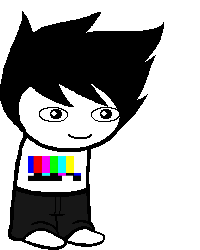

Waste of Mind
Full name: Fredrick Von Schnitzel
Trolltag/Chumhandle: smarterthanYouraveragefred
Quirk: The quick brown Fox jumped over the lazy Dog
Associated Colour: (Dull Rainbow)
Session: N/A
Dancestor: Carl
Modus: The Stack-Queue Modus
(Can draw From the first or last card in the deck.)
Strife Specibus: Suitcsekind
Server: N/A
Client: N/A
Matesprit: N/A
Kismisis: N/A
Morail: N/A
Auspistice: N/A
Land:
Your land is the PROSPIT in SPACE. You do not have a normal land, as you were never technically a player. You live on said ship with all the other Ship! Players.
Notes 1:
- Carries around a suitcase with Katnip in it.
- Favourite food is Hardtack.
- Favourite animal is Weevils.
- Is Fred #201214.
Notes 2:
- Carries around a suitcase with surprise tools that will help us later!
- He’s smarter than your average Fred!